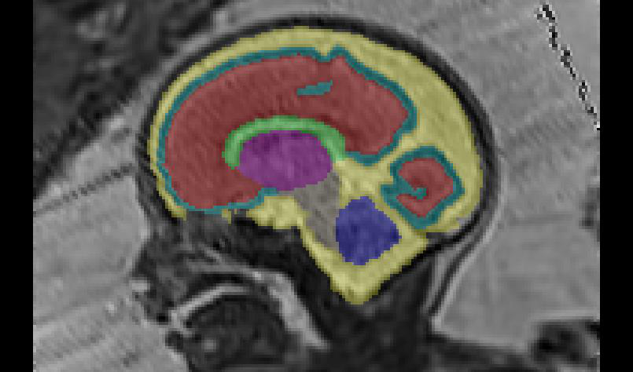

A Dempster-Shafer approach to trustworthy AI with application to fetal brain MRI segmentation. The study was published in the journal ArXiv:2204.02779v1 [eess.IV] 5 Apr 2022. The authors are currently working at the University of Zurich in Zurich, Zurich, Switzerland, and University of Leuven, Belgium, where they studied in the Netherlands, Belgium and the Netherlands. Their findings will be published in Springer Springer, Springer and Mediomedomedicemia.com.
They propose a principled trustworthy AI theoretical framework and a practical system that can augment any backbone AI system using a fallback method and a fail-safe mechanism. They show that the trustworthy AI method improves the robustness of a state-of-the-art backbone AI for fetal brain MRI segmentation on fetal MRIs acquired across various centers and for fetuses with various brain abnormalities. They demon-strate the e-ectiveness of the proposed trustworthy AI approach on the largest reported annotated dataset of fetal T2w MRI.
The segmentation of fetal brain MRI is essential to study normal and abnormal fetal brain development. The task consists of segmenting automatically a fetal brain 3D MRI into eight clinically relevant tissue types. They evaluated the proposed trustworthy AI method on fetal brain segmen tation into eight tissue types using 3D T2w MRI. The task is clinically relevant and is characterized by large image-protocol variations and large anatomical variations. The only source of error in this formulation of the fail-safe AI method is the back-pronebone AI algorithm only
Deep neural networks for medical image segmentation (AI algorithm) are typically trained on images from a lim-ited number acquisition center. When the trained AI algorithm is deployed, it will typically give satisfactory accuracy for images acquired with the same proto-oglecol as training images and with a health condition represented in the training dataset. Experts knowledge about the anatomy is modelled using Dempster-Pster-Shafer theory. When part of the AI segmentation is found to contradict expert knowledge for a voxel, the trustworthy AI algorithm automatically switches to the fallback segmentation for this area.
Illustration of the improved robustness of the TW-AI method (TW-AI) as compared to a state-of-the-art AI method. Fthe out of thirteen data sources were used for the training of the backbone of the AI algorithm. The training data was divided based on the un-derlying brain condition of the fetus. Fetal MRI data was used to measure the segmentation performance of the new AI algorithm and the fallback and the fail-safe algorithm.
The anatomy and the size of the fetal brain change significantly from 19 weeks of gestation until term for both neurotypical fetuses and fetuses with spina bi fida They have used a subset of 50 3D MRIs from the out-of-scanner distribution group of the publicly available FeTA dataset They found a positive correlation between the mean-class trustworthiness scores and the quality of the 3D MRI for the spina-bi-da group (Pearson r = 0.43)
They analysed the performance of the proposed trustworthy AI algorithm for fetal brain segmentation as a function of the gestational age. They compared it to the backbone AI algorithm based on deep learning and the fallback algo-based algorithm. They grouped fetuses with neurotypical or spina bifida condition with the same gestual age rounded to the closest-to-the-closer-weekly week. They found that the trustworthy AI method signi-idatedcantly outperforms the AI in terms of both Dice score and Hausdorff distance for every group.
AI-Fallback algorithms are based on the backbone AI, fallback, and trustwor-referthy AI segmentation algorithms. They report for each algorithm the distributions of Dice scores (resp. Hausdorff distances at 95% per-centile (HD95) and for neurotypical (n = 141) and spina bifida) They also report the automatic scoring of the trustworthiness of a subset of experts of experts for a subset-of-scanner 3D MRIs.
Each expert was asked to score from 0 (totally unacceptable) to 5 (perfectly) the trustworthi-centricness of each ROI. The scores displayed here are averaged across ROIs. Results can be found in the appendix of the appendix (Fig. 7, 8, 9, 10, 11). Box limits are the first and second quartiles and third quartiles. The central ticks are the median values. Outliers are data points outside the range of the
Researchers have formalized a method for trustworthy AI with a fallback based on Dempster-Shafer theory. The fallback algorithm outperformed the backbone AI algorithm for neurotypical and spina bifida fetal brain 3D MRIs. They think this is because anatomical prior-based segmentation prevents mislabelling voxels far from the real anatomy in contrast, AI-based method are unconstrained and such errors can occur. They have shown that the trustworthy AI method can be implemented using anatomy-based and intensity-based priors.
This is the only group for which the trustworthy AI method does not significantly perform the AI method in terms of Dice score (Fig. 3a,3b) This is surprising given that more MRIs acquired at gestational ages lower than 27 weeks than higher were present in the training dataset. The abnormal brain anatomy of spina bi-bi-da cases leads to more difficult segmentation com-pterpared to neurotypical cases. This is particularly the case for several classes: the cerebellum, the extra-axial cerebrospinal fluid (CSF), the cortical gray matter, the brainstem, and the
For fetal brain MRI of spina bifida. fetuses with gestational ages of 27 weeks or less this is often not the case. The extra-axial CSF might be reduced to several small connected components that do not embrace the entire cortex anymore They hypothesize that the spina.biffida atlas does not cover well this variability of the extra.axial. CSF variability is due to the fact that the extra-
For gestational ages of 21 weeks or higher, the trustworthy AI outperforms either the backbone AI-algorithm or the fallback algorithm and performs better or on a par with the best other algorithms for all regions of interest in terms of Dice score and Hausdor distance (Fig. 9,10) Future work will require manually annotated 3D MRIs for every scanner acquisition protocol, for every condition, and for every gestational age, to train and test the AI algorithm. The proposed fail-safe mechanism, that is part of the trustworthy AI method, could be used to help improve the AI method.
The margins used in the trustworthy AI segmentation algorithm for fetal brain MRI could also support interactive segmentation. Instead of providing voxel-level corrections or scribbles, the annotator could interact with the auto-centric segmentation by manually adapting the margins for its annotation. This yields partial annotations that can be exploited to improve the backbone AI method using partially-supervised learning methods. This is similar, in terms of user interaction, to the safety margins that are used in clinics for radiation therapy planning.
They have collected a dataset with a total of 540 fetal brain 3D MRIs with neu-proprotypical or abnormal brain development. This is the largest fetal brain MRI dataset reported to date. The majority of the data was obtained at University Hospital Leuven (UHL) and University of Vienna (MUV) The data was collected from 13 sources of data across 6 countries. Composition of the training and testing datasets (total: 540-540-MRIs) In-scanner distribution designates the data acquired at the same center as the training data.
Neurotypical fetuses were scanned for a suspected abnormality somewhere else than in the brain, while a minority was scanned for screening of brain abnor-ophobicmality but was proven neurotypical after MRI. The training dataset consists of the 47 volumes from the three fetal brain atlases, and the rest of the data is used for testing (n = 349) Data from KCL consists exclusively of brain 3D MRIs of fetuses with a normal brain development. Data from MUV, UCLH, MCT, BFT, CRK, NCS, LVP and LVP consist only of 3D MRI slices diagnosed with spina bi-
The brain masks were computed directly using the 3D MRIs and the atlas-based method as described in the previous work. They were then used to create the brain masks for the patients. They were also used to make the masks of those patients. The masks were created using an atlas based method described in previous work. The brain maskes were used to map the brain maps of the patients and their brain maps were used in the study. The results were published in
A contract of trust is an attribute of the AI algorithm which, if not fulfilled, causes a risk in using the algorithm. The user can trust an AI medical image segmentation algorithm for a given tissue type, for images coming from a given type of scanner, or for a population and not another. The EU guidelines propose to achieve trustworthiness in practice using a fallback algorithm. They present a theoretical framework for the implementation of a trustworthy AI system leveraging Dempster-Shafer the-ory to implement a failsafe fallback plan.
In Dempster-Shafer theory, basic probability assignments are a general-generalization of probabilities that allow to model partial information and to combine partial information. They introduce the concept of complete contradiction between BPAs which they need for the rule of combination. Two BPAs on C, m1 and m2, are said to be completely contradictory if and only if one cannot form a pair of overlapping sets of classes (A, B) such that m1 commits some belief to A, i.e. m1(A) > 0, while m2(F) = 1/2)
Dempster’s rule of combination allows to combine any pair (m1, m2) of BPAs on C that are not completely contradictory. For example, m1 ⊕ m2 is also a BPA on C, using the formula that is symmetrical and associated with the relation of a probability on C. In this section, they present the formulation of the method for a trustworthy image-based medical segmentation for medi-centric AI. They conclude that the method is a trustworthy approach to image-recognition.
The trustworthy AI segmentation method consists of three main compo-probabilities algorithms. The fallback segmentation algorithm is a segmentor that might achieve lower accuracy than the AI, but is superior to the AI for other desirable properties such as robustness. The fail-safe mechanism aims at detecting erroneous predictions of the AI that contradict one of the contracts of trust. Most contract will not enforce a specificognitivesegmentation but rather impose that the automatic segmentation meets certain constraints. In the context of image segmentation, contract of trusts can only reduces the set of possible classes and reweights the class probabilities of the segmentation of a voxel.
The fallback algorithm pfallback is then de-fined as mnot-all-green (C \ {(green, green)}) = 1. The contract of trust is de-de-denied as m not-all green (C) = 1. In the case of a complete contradiction between the default algorithm and the trust, the trustworthy algorithm switch completely to the fallback algorithms. They also rely on the incompatibility between the AI segmentation algorithm prediction and the contracts of trust to detect failure of the algorithm and to switch to fallback.
The fallback probabilities act as a discounting factor in Dempster Shafertheory Rolf Haenni summarized the motivation for the use of such an algorithm by Sherlock Holmes’ statement : “When you have eliminated the impossible, whatever remains, however improbable, must be the least improbable’s truth” They use this property at the advantage to implement the fail-safe mechanism to switch between the AI algorithm and the fallback algorithm. They recommend recommending a value of ϵ small compared to 1.
Using the Dempster’s rule of combination (6) they obtain, for every class c ∈ C, they obtain the same result for pTWAII,x.c,x (c) and p.tWAI (c), p.P.I (C) =.apologetic(C) for pAI,x) and mfail-safe(c) with pAI (pAI) (PAI) is completely contradictory with pA (C), and ϵ > 0, they assume that pAI.i,x(C),x(c),x.pAI (C%),x (C,) is a completely
In this section, they describe the proposed anatomical prior basic probability assignment (BPA) manatomy that is used in the trustworthy AI method (11) The anatomical prior is computed using the segmentations computed using a multi-atlas segmentation algorithm. They propose the following trust-worthy AI model for medical image segmentation. The anatomical contract of trust will hold only for neurotypical fetal brain and spina bifida fetal brain atlas
The white matter basic probability assignment is computed by dilating the white matter mask of the fallback algorithm. The margin aims at eliminating the false negative for the mask M white matter. The same approach is applied to all the regions of interest to be segmented. They propose to add spatial margins to the atlas-based segmentation to compute the BPAs of the anatomical contract of trust. The BPA is inspired by the safety margins used in radiotherapy to account for errors including spatial registration errors
They show that there is always at least one class that is compatible with the set of anatomical prior. For all voxel x and for all subset of classes C′ ⊂ C, the BPA mass that the true label of x is not in C′ is equal to that of manatomy-likelihood. They describe a method to tweak the margins at training time for each class at the end of this section. An example is shown in Fig. 5 for the white matter.
They have proposed to use the margin-distance to define the margins used in the de finition of the anatomical BPAs. They chose the margin for a given class c to be the minimal dilation radius for the dilated mask to cover entirely the true region of class c even if it creates overlaps with class c. An illustration is given in Fig. 6: Illustration of the margin distance. The margin distance is the distance to apply to the predicted binary mask so that it covers the ground-truth binary mask.
It is known that hyper-intense voxels inside the brain are highly likely to be part of the cerebrospinal fluid (CSF) They therefore propose to model this intensity-based contract of trust for fetal brain seg-mentation (11) The intensity prior basic probability as-signment (BPA) mintensity is used in the trustworthy AI method for fetal-brain 3D MRI segmentation. For fetuses with a condition other than neurotypical or spina bifida, they chose the margin of interest between Mpred and Mgt. Mgt. The margin is chosen as the 95% percentile value of HDF N95
The AI segmentation algorithm used is based on nnU-Net which is a state-of-the-art deep learning-based method for medical image segmentation. There are hypo-intense voxels in every class. The brain masks are all computed automatically either during the 3D reconstruction of Leuven data using NiftyMIC or for the other fetal brain atlases using a multi-atlas segmentation method. The intensity values inside the dilated brain mask are clipped to the percentile values at 0.5% and 99%.
The AI segmentation algorithm consists of the ensemble of those five 3D U-Nets. Each U-Net is initialized at random at random using He initialization. The data augmentation methods used are: random cropping of a patch, random zoom, gamma intensity augmentation, random rotations, random mirroring along all axes, contrast-like contrast-augmentation, additive Gaussian noise, Gaussian blurring, and simulation of low resolution. Multi-atlas segmentation is one of the most trustworthy approaches for medical image segmentation in terms of anatomi-cal plausibility.
The data term L is the local normalized cross correlation (LNCC) with the normalized deviation of the Gaussian kernel of the LNCC was set to 6 mm. The hyper-parameters for the non-linear registration were chosen to be the same as in a recent registration pipeline to create a fetal brain atlas The fusion strategy for the atlas volumes and the fusion strategy was used to train the AI segmental algorithm. And for the selection strategy wecompared the condition-specicificoutment strategy described above to a simple average.
The trustworthiness of fetal brain 3D MRI segmentation is evaluated using a Likert scale ranging from 0 star to 5 star. The evaluation is performed on 50 3D MRIs from the FeTA dataset. The results can be found in the appendix of the appendix. The approach selected consists of GIF-like atlas-segmentations fusions, condition specific atlas selection and ∆GA = 1 for the neurotypical condition and 3 for the spina bi-da condition. The scoring was performed independently by 4 individuals or groups of ex-professors.
The segmentation protocol that was used for the manual segmentations can be found at http://neuroimaging.ch/feta. The FeTA dataset is publicly available on Synapse: https://doi.org/10.7303/syn23747212. Access to the data from MUV can be re-quested using the contact details available at https://www.cir.meduniwien.ac.u/research/fetal/. Access to data from KCL will require approval by the ethics committee at UCLH, MCT, BFT, CRK, NCS, and LVP.